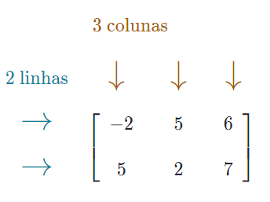
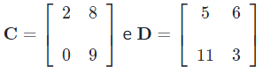
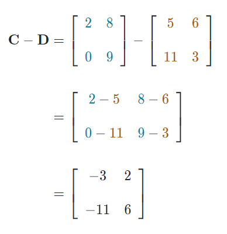

PRODUTO DE MATRIZES (SUBTRAÇÃO)
Que conceitos você deve conhecer antes de iniciar?
Uma matriz é um conjunto retangular de números organizados em linhas e colunas. Cada número de uma matriz leva o nome de elemento ou entrada.
As dimensões de uma matriz determinam, respectivamente, o número de linhas e colunas. Como a matriz A tem 2 linhas e 3 colunas, é chamada de matriz 2x3.
SUBTRAÇÃO DE MATRIZES
Da mesma forma, para subtrair matrizes, subtraímos os elementos correspondentes.
Por exemplo, vamos considerar.
Podemos calcular C - D subtraindo os elementos correspondentes nas matrizes C e D, conforme demonstrado abaixo.
